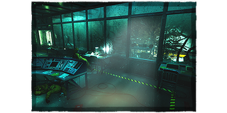
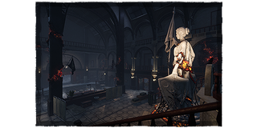
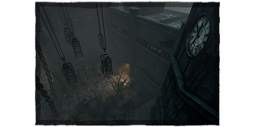
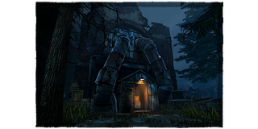
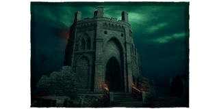
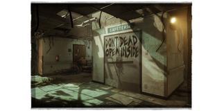

両区分共通のMAPリミット
- 個人・ペア参加とチーム参加でMAPルールに差はありません。
- 同一チームは大会全体を通して同一MAPを再使用できません。
- 同一MAPのバージョン違いは同一MAPとして扱います。1つを選択した場合、他のバージョンは選択できません。
- 相手チームの使用履歴は、自チームの使用可否に影響しません。
- 無効試合・未実施試合のMAPは使用済みにしません。
- 個人・ペア参加でキラーを再使用する場合も、MAPリミットは適用します。
MAPの選択・設定
- 予選はグループごとのMAPプールを使用します。各チームは屋内1戦・屋外1戦が必須で、順番は自由です。
- 所属グループのプール内なら、自チームが希望していないMAPも選択できます。
- 使用MAPは大会のMAPプール・MAPリミット等の範囲内で決定します。
- MAP希望確認と同時に、パークやアドオンの提出は求めません。
- MAPはキラー側が設定します。設定後に運営をカスタムロビーへ招待してください。
- 運営入室後のMAP変更は原則不可です。変更が必要な場合は運営へ申告してください。
- オファリングは両陣営ともすべて使用禁止です。
使用可能MAP・MAPプール
MAPリミットは各試合に適用します。予選のボーナスMAPも両グループのプールに含まれます。
予選A MAPプール
- 酒場
- ギデオン
- コールタワーⅠ
- ラクーン東
- レリー
- オーモンド山のリゾートⅡ
- ホーキンス
予選B MAPプール
- コールタワーⅠ
- 小学校
- ラクーン東
- 落ちた避難所
- オーモンド山のリゾートⅡ
- ホーキンス
準決勝MAPプール（屋内MAP）
-

ホーキンス
-

ラクーン東
-

小学校
決勝MAPプール（屋外MAP）
-

コールタワー
-

忘れ去られた遺跡
-

落ちた避難所
ボーナスMAP
対象MAPを使用すると＋1Pt。
- 予選共通：オーモンド山のリゾートⅡ／ホーキンス
- 準決勝：ホーキンス
- 決勝：対象は決勝戦終了まで非公開
予選では各試合の勝敗には加えず、予選総合Ptの④に加えます。準決勝・決勝では第1判定に加えます。
得点・順位の計算方法を見る